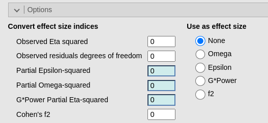
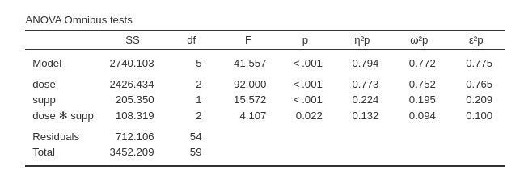
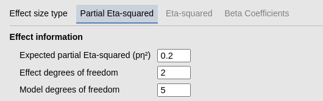
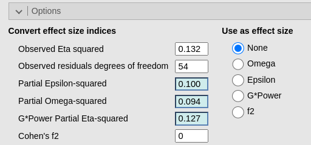
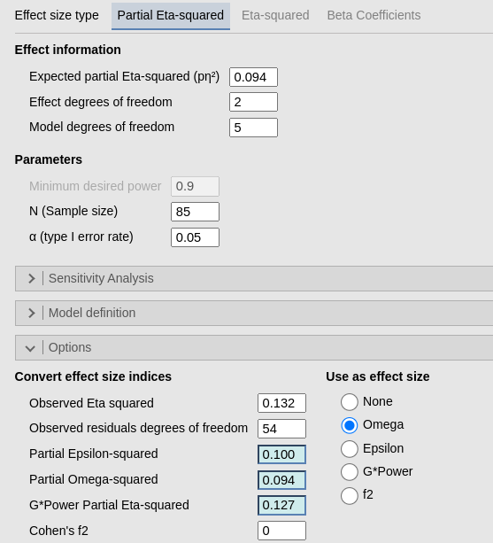
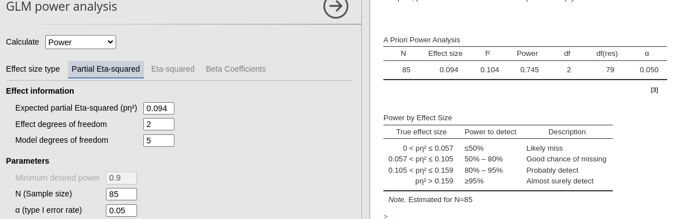

GLM options: converting effect size
Consistency checks
0.2.0
Here we check that the options provided by PAMLj to help constructing the power analysis yield correct results.
Adjusted effect size
When power analysis is based observed effect sizes taken from previous research or pilot studies, it is always a good idea to use an adjusted version of the indices. This because the indices of effect size based on variances are almost always up-ward biased (Richardson 2011). For the Partial Eta-squared there are two adjustments that can be carried out, yielding the Partial Omega-Squared and the Partial Epsilon-squared. The two are very similar, so any of the two would work fine.
In order to adjust the observed Partial Eta-squared in PAMLj, one needs the actual value, the effect degrees of freedom and the residual degrees of freedom of the model from which the index is taken. This information is almost always present in a published paper and is always present in software results (if the info comes from a pilot study). Thus one can plug this info into the fields in the Option , Convert effect size indices.

To help us out in this exercise, let’s consider he
Tooth Growth dataset from the jamovi
data library. The data allows for a 2 (dose) X 3 (supp)
ANOVA that can be carried out with the rjamovi` module GAMLj3. The effect size indices of
the effects are presented in the ouput table.

We now assume that the researcher does not have access to the full set of results (say the Partial Eta-squared is taken from a paper), but only to the reported effect of the interaction, with F(2,54)=4.107, p.=.002, \(p\eta^2=.132\). The researcher prefers to use an adjusted version of the index in the power analysis, but the full table of results is not available, only the F-test info is as just reported in the text.
To use an adjusted version, first we define the correct df for the effect and for the model in the main panel.

Then we fill in the Observed Partial Eta-squared (\(p\eta^2=.132\)) and Observed residuals degrees of freedom (\(df=54\)) fields with the data from our paper.

It is clear that the module is computing the right adjusted coefficients. At this point, we pick the adjusted index that we like by selecting it in Use as effectr size (here \(\omega\)), and it will be automagically transferred in the main panel Expected partial Eta-squared.

Out of curiosity, if we were looking for a minimum sample size to achieve a power of at least .90, with the original (un-adjusted) effect size we would obtain \(N=86\). With the adjusted version (\(\omega=.094\)) we would obtain \(N=125\), which is 145.3% larger than the other. To be more concrete, because it is very likely that our population effect size being closer to .094 than to .132, had we used .132 and so collected data for a sample of \(N=86\), our actual power will be \(1-\beta=.745\), way lower than the .90 we planned.

GPower Partial effect size indices
GPower (a leading software for power analysis) suggest to use a different adjustment. The adjustment yields values that are usually in beteween the observed effect size and the population effect size. PAMLj provides the possibility to use the GPower adjustment, by simply selecting G*Power in the Use as effect size list.
For the user convenience, the option f2 is there to allow comparing results from GPower (which uses \(f^2\) as an effect size) and PAMLj without having the user to transform the effect size indices back and forth.
References
’
Comments?
Got comments, issues or spotted a bug? Please open an issue on PAMLj at github or send me an email